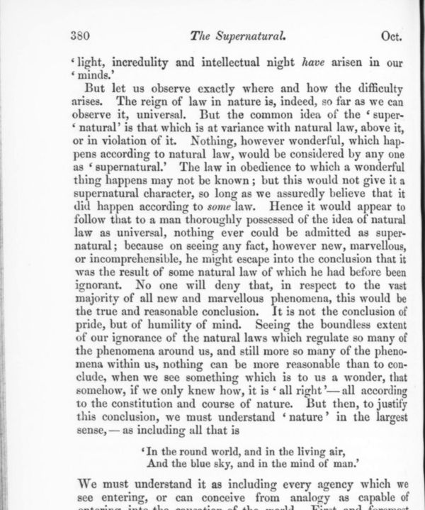

“The reign of law in nature is, indeed, … universal” (p. 380)
English: vol. 116 (October 1862), p. 380, scan. Highlighted: the sentences Lecky quotes (with omissions, marked by him with dots).

But let us observe exactly where and how the difficulty arises. The reign of law in nature is, indeed, so far as we can observe it, universal. But the common idea of the ‘supernatural’ is that which is at variance with natural law, above it, or in violation of it. Nothing, however wonderful, which happens according to natural law, would be considered by any one as ‘supernatural.’ The law in obedience to which a wonderful thing happens may not be known; but this would not give it a supernatural character, so long as we assuredly believe that it did happen according to some law. Hence it would appear to follow that to a man thoroughly possessed of the idea of natural law as universal, nothing ever could be admitted as supernatural; because on seeing any fact, however new, marvellous, or incomprehensible, he might escape into the conclusion that it was the result of some natural law of which he had before been ignorant. No one will deny that, in respect to the vast majority of all new and marvellous phenomena, this would be the true and reasonable conclusion. It is not the conclusion of pride, but of humility of mind. … But then, to justify this conclusion, we must understand ‘nature’ in the largest sense,—as including all that is
‘In the round world, and in the living air,
And the blue sky, and in the mind of man.’We must understand it as including every agency which we see entering, or can conceive from analogy as capable of entering, into the causation of the world. First and foremost among these is the agency of our own mind and will.
Lecky compresses the third sentence (“But then we must understand nature as including every agency …”) and has “capable of entering” for “as capable of entering”. The verse is from Wordsworth’s “Lines written a few miles above Tintern Abbey”, where it reads “And the round ocean and the living air”.
Backlinks
Every place in Rationalism in Europe that links to this page (generated automatically when the site is built).
- Chapter II: note 24